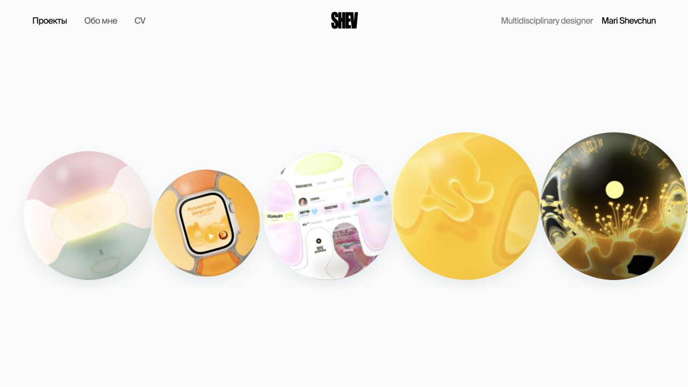
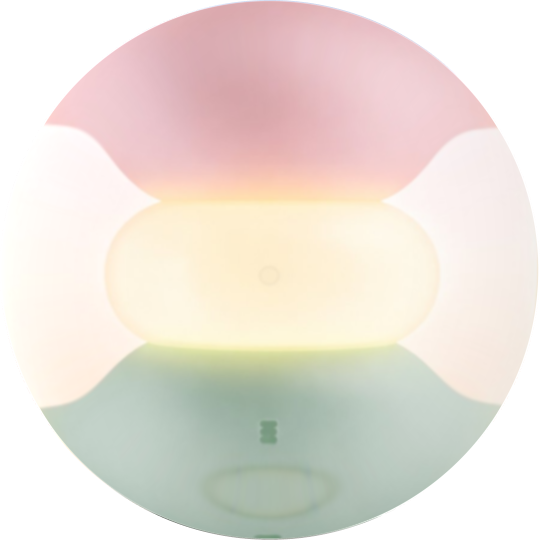
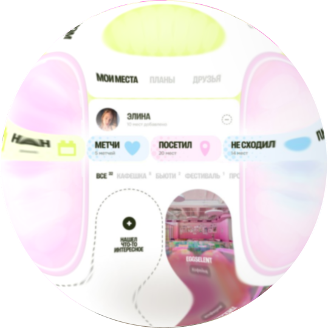
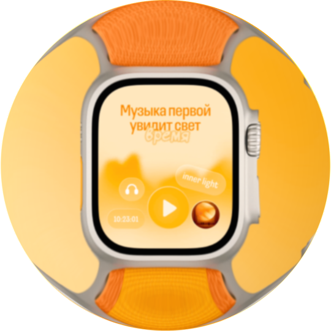
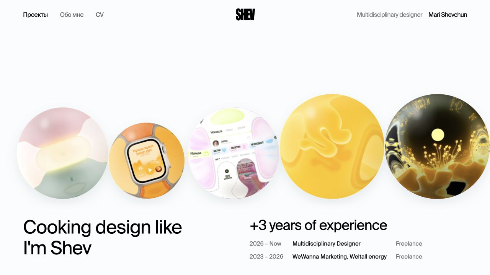
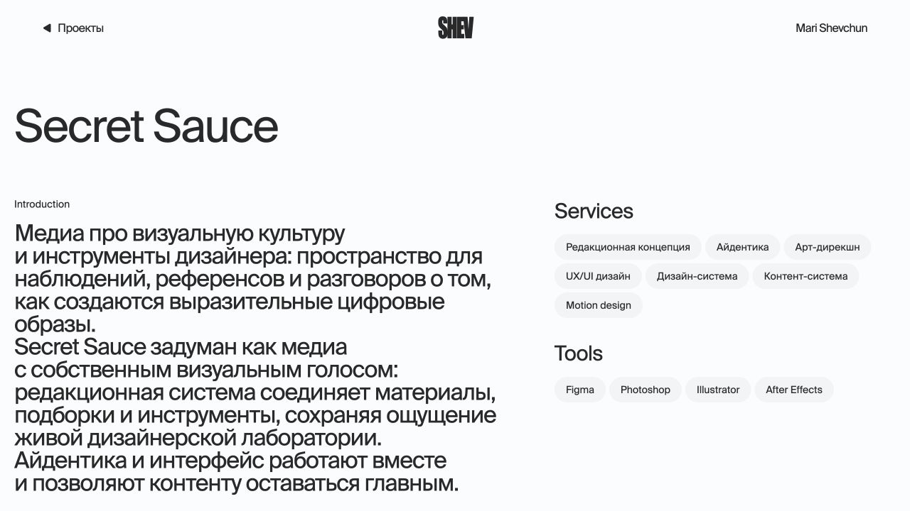

Настоящее ощущение веса
Шары падают, сталкиваются, вращаются и постепенно успокаиваются. После остановки остаётся едва заметное тяжёлое покачивание.
Mari Shevchun

Задача
Идея
Не раскладывать работы по привычной сетке, а поместить их в воображаемую стеклянную банку. Каждый проект становится объектом со своим весом, масштабом и характером.





Интерактивная система
Шары падают, сталкиваются, вращаются и постепенно успокаиваются. После остановки остаётся едва заметное тяжёлое покачивание.
Чем сильнее удар, тем ярче короткий блик и громче стеклянный звон. Звук синтезируется прямо в браузере.
При наведении появляется прозрачная карточка с названием, годом и типом работы. Шар можно перетащить, а клик ведёт сразу на страницу проекта.
Первый экран
Обложки падают первыми. Когда последнее заметное столкновение затихает, снизу мягко появляется личная информация и опыт работы.

Принципы
01 Белый фон и чёрная типографика удерживают визуалы в центре внимания.
02 Масштаб шаров задаёт иерархию и подсказывает, с каких проектов начать.
03 Движение выразительное, но достаточно спокойное для точного наведения.
04 При возвращении из проекта композиция сохраняется и не падает заново.
Внутри проекта
Все кейсы используют общую структуру: введение, роль, инструменты, последовательность визуалов и переход к следующей работе. Фон и ритм адаптируются под содержание конкретного проекта.

Результат